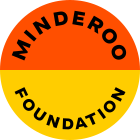

Open call for sampling sites!
We are looking for 25 ecologically significant marine sites to become part of the eDNA Expeditions project! This is a unique opportunity to develop local knowledge on biomolecular sampling, engage with your community, and unlock biomolecular knowledge on marine species at your site.
Apply now >
eDNA Expeditions is a project under the Intergovernmental Oceanographic Commission (IOC) of UNESCO, supported by Minderoo Foundation, led by OBIS, with the technical collaboration of WilderLabs.

eDNA Expeditions is a project endorsed by the UN Decade of Ocean Science for Sustainable Development 2021-2030.